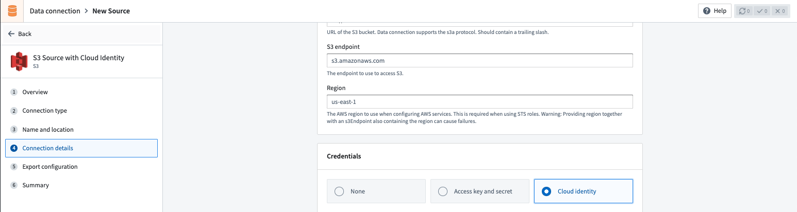
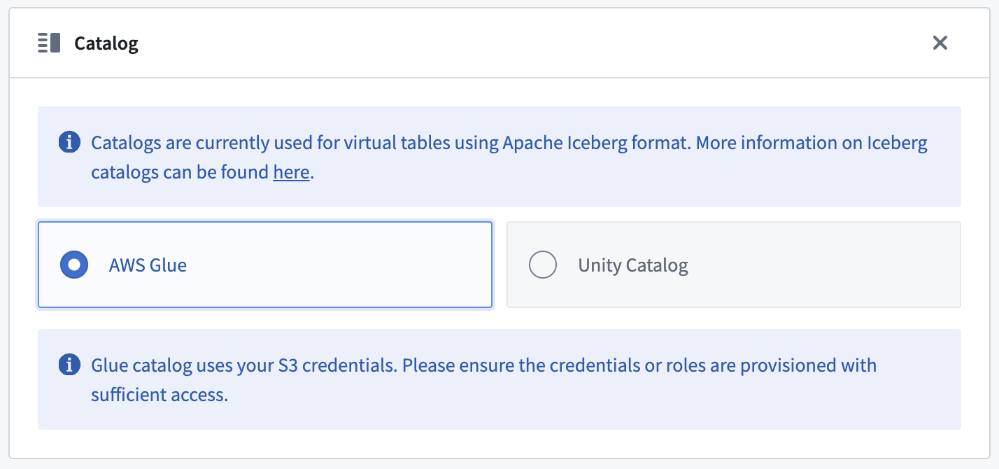

Connect Foundry to AWS S3 to read and sync data between S3 and Foundry.
| Capability | Status |
|---|---|
| Exploration | ð¢ Generally available |
| Bulk import | ð¢ Generally available |
| Incremental | ð¢ Generally available for supported file formats |
| Media sets | ð¢ Generally available |
| Virtual tables | ð¢ Generally available |
| File exports | ð¢ Generally available |
Learn more about setting up a connector in Foundry.
| Option | Required? | Description |
|---|---|---|
URL |
Yes | URL of the S3 bucket. Data connection supports the s3a protocol. Should contain a trailing slash. See AWS's official documentation â for more details. For example: s3://bucket-name/ |
Endpoint |
Yes | The endpoint to use to access S3. For example: s3.amazonaws.com or s3.us-east-1.amazonaws.com |
Region |
No | The AWS region to use when configuring AWS services. This is required when using STS roles. Warning: Providing region together with an S3 endpoint also containing the region can cause failures. For example: us-east-1 or eu-central-1 |
Network connectivity |
Yes | Step 1: Foundry egress policy Attach a Foundry egress policy to the bucket to allow Foundry to egress to S3. The Data Connection application suggests appropriate egress policies based on the connection details provided. For example: bucket-name.s3.us-east-1.amazonaws.com (Port 443) Step 2: AWS bucket policy Additionally, you will need to allowlist the relevant Foundry IP and/or bucket details for access from S3. Your Foundry IP details can be found under Network egress in the Control Panel application. See official AWS documentation â for more details on how to configure bucket policies in S3. Note: Setting up access to an S3 bucket hosted in the same region as your Foundry enrollment requires additional configuration. Read more about these requirements in the network egress documentation. |
Client certificates & private key |
No | Client certificates and private keys may or may not be required by your source to secure the connection. |
Server certificates |
No | Server certificates may or may not be required by your source to secure the connection. |
Credentials |
Yes | Option 1: Access key and secret Provide the Access Key ID and Secret for connecting to S3. Credentials can be generated by creating a new IAM User for Foundry in your AWS Account, and granting that IAM User access to the S3 bucket. Option 2: OpenID Connect (OIDC) Follow the displayed source system configuration instructions to set up OIDC. See official AWS documentation â for details on OpenID Connect and our documentation for details on how OIDC works with Foundry. See official AWS documentation â for more details on creating an AWS IAM user. Review our documentation permissions for S3 for details on which AWS permissions Foundry expects the user to have. |
STS role |
No | The S3 connector can optionally assume a Security Token Service (STS) role â when connecting to S3. See STS role configuration for more details. |
Connection timeout |
No | The amount of time to wait (in milliseconds) when initially establishing a connection before giving up and timing out. Default: 50000 |
Socket timeout |
No | The amount of time to wait (in milliseconds) for data to be transferred over an established, open connection before the connection times out and is closed. Default: 50000 |
Max connections |
No | The maximum number of allowed open HTTP connections. Default: 50 |
Max error retries |
No | The maximum number of retry attempts for failed retryable requests (ex: 5xx error responses from services). Default: 3 |
Client KMS key |
No | A KMS key name or alias used to perform client-side data encryption with the AWS SDK. Using this option on an agent in PCloud requires proxy changes. |
Client KMS region |
No | The AWS region to use for the KMS client. Only relevant if a AWS KMS key is provided. |
Match subfolder exactly |
No | Optionally match the path specified under subfolder as an exact subfolder in S3. If set to false, both s3://bucket-name/foo/bar/ and s3://bucket-name/foo/bar_baz/ will be matched with a subfolder setting of foo/bar/. |
Proxy configurations |
Yes - for agent-based connection only | Configure proxy settings for S3. Note: this is required if (a) your Foundry enrollment is hosted in AWS, (b) you are connecting to an S3 bucket hosted in a different AWS region than your Foundry enrollment, and (c) you are connecting via a data connection agent. See S3 proxy configuration for more details. |
Enable path style access |
No | Use Path-style access URLs (for example,https://s3.region-code.amazonaws.com/bucket-name/key-name) instead of Virtual-hosted-style access URLs (for example, https://bucket-name.s3.region-code.amazonaws.com/key-name). See official AWS documentation â for more details. |
Catalog |
No | Configure a catalog for tables stored in this S3 bucket. See Virtual tables for more details. |
The following AWS permission is required for interactive exploration of the S3 bucket:
{
"Action": ["s3:ListBucket"],
"Resource": ["arn:aws:s3:::path/to/bucket"],
"Effect": "Allow",
}
The following AWS permission is required for batch syncs, virtual tables and media syncs from S3:
{
"Action": ["s3:GetObject"],
"Resource": ["arn:aws:s3:::path/to/bucket/*"],
"Effect": "Allow",
}
See official AWS documentation on Policies and Permissions in Amazon S3 â for more details on how to configure bucket policies in S3.
When connecting to S3 using a data connection agent, you can define proxy settings in two ways:
-Dhttps.proxyHost=example.proxy.com).| Parameter | Required? | Default | Description |
|---|---|---|---|
host |
Y | HTTP proxy host (no scheme). | |
port |
Y | Port for HTTP proxy. | |
protocol |
N | HTTPS |
The protocol to use. Either HTTPS or HTTP. |
nonProxyHosts |
N | List of host names (or wild card domain names) that should not use the proxy. For example: *.s3-external-1.amazonaws.com|*.example.com. |
|
credentials |
N | Include this block if your proxy requires basic HTTP authentication (prompted by a HTTP 407 response â). | |
credentials.username |
N | Plaintext username for the HTTP proxy. | |
credentials.password |
N | Encrypted password for the HTTP proxy. |
STS role configuration allows you to make use of AWS Security Token Service â to assume a role when reading from S3.
| Parameter | Required? | Default | Description |
|---|---|---|---|
roleArn |
Y | STS role ARN name. | |
roleSessionName |
Y | The session name to use when assuming this role. | |
roleSessionDuration |
N | 3600 seconds | The session duration. |
externalId |
N | An external ID to use when assuming a role. |
Cloud identity authentication allows Foundry to access resources in your AWS instance. Cloud identities are configured and managed at the enrollment level in Control Panel. Learn how to configure cloud identities.

When using cloud identity authentication, the role ARN will be displayed in the credentials section. After selecting the Cloud identity credential option, you must also configure the following:
This section provides additional details around using virtual tables from an S3 source. This section is not applicable when syncing to Foundry datasets.
The table below highlights the virtual table capabilities that are supported for S3.
| Capability | Status |
|---|---|
| Bulk registration | ð´ Not available |
| Automatic registration | ð´ Not available |
| Table inputs | ð¢ Generally available: Avro â, Delta â, Iceberg â, Parquet â in Code Repositories, Pipeline Builder |
| Table outputs | ð¢ Generally available: Avro â, Delta â, Iceberg â, Parquet â in Code Repositories, Pipeline Builder |
| Incremental pipelines | ð¢ Generally available for Delta tables: APPEND only (details)ð¢ Generally available for Iceberg tables: APPEND only (details)ð´ Not available for Parquet tables |
| Compute pushdown | ð´ Not available |
Consult the virtual tables documentation for details on the supported Foundry workflows where tables stored in S3 can be used as inputs or outputs.
When registering virtual tables, remember the following source configuration requirements:
., you must enable path-style access and set up the appropriate egress policy.See the Connection Details section above for more details.
To enable incremental support for pipelines backed by virtual tables, ensure that Change Data Feed â is enabled on the source Delta table. The current and added read modes in Python Transforms are supported. The _change_type, _commit_version and _commit_timestamp columns will be made available in Python Transforms.
An Iceberg catalog is required to load virtual tables backed by an Apache Iceberg table. To learn more about Iceberg catalogs, see the Apache Iceberg documentation â. All Iceberg tables registered on a source must use the same Iceberg catalog.
By default, tables will be created using Iceberg metadata files in S3. A warehousePath indicating the location of these metadata files must be provided when registering a table.
AWS Glue â can be used as an Iceberg catalog when tables are stored in S3. To learn more about this integration, see the AWS Glue documentation â. The credentials configured on the source must have access to your AWS Glue Data Catalog. AWS Glue can be configured in the Connection Details tab on the source. All Iceberg tables registered on this source will automatically use AWS Glue as the catalog. Tables should be registered using database_name.table_name naming pattern.
Unity Catalog â can be used as an Iceberg catalog when using Delta Universal Format (UniForm) in Databricks. To learn more about this integration, see the Databricks documentation â. As with AWS Glue, the catalog can be configured in the Connection details tab on the source. You will need to provide the endpoint and a personal access token to connect to Unity Catalog. Tables should be registered using catalog_name.schema_name.table_name naming pattern.
Polaris â can be used as an Iceberg catalog for tables stored in S3. As with other catalogs, Polaris can be configured in the Connection Details tab on the source.

Incremental support relies on Iceberg Incremental Reads â and is currently append-only. The current and added read modes in Python Transforms are supported.
Virtual tables using Parquet rely on schema inference. At most 100 files will be used to determine the schema.
To export to S3, first enable exports for your S3 connector. Then, create a new export.
The following AWS permission is required to export data to S3:
{
"Action": ["s3:PutObject"],
"Resource": ["arn:aws:s3:::path/to/bucket/*"],
"Effect": "Allow",
}
See official AWS documentation on Policies and Permissions in Amazon S3 â for more details on how to configure bucket policies in S3.
When using an S3 bucket as a bring-your-own-bucket (BYOB) storage location for Foundry Iceberg tables, the following AWS permissions are required on the S3 bucket and the KMS key used to encrypt it:
{
"Action": [
"s3:DeleteObject",
"s3:GetObject",
"s3:ListBucket",
"s3:PutObject"
],
"Resource": [
"arn:aws:s3:::bucket-name",
"arn:aws:s3:::bucket-name/*"
],
"Effect": "Allow"
}
Additionally, the following KMS permissions are required:
{
"Action": [
"kms:Decrypt",
"kms:Encrypt",
"kms:GenerateDataKey"
],
"Resource": ["arn:aws:kms:region:account-id:key/key-id"],
"Effect": "Allow"
}
The sts:GetFederationToken permission is also required for credential vending. See the BYOB storage documentation for complete setup instructions.
| Option | Required? | Default | Description |
|---|---|---|---|
Path Prefix |
No | N/A | The path prefix that should be used for exported files. The full path for an exported file is calculated as s3://<bucket-name>/<path-in-source-config>/<path-prefix>/<exported-file> |
Canned ACL |
No | N/A | Set the AWS access control list (ACL) attached to the uploaded files, using one of the canned ACLs. See AWS documentation â for a description of each ACL. |
:::callout{theme="warning"} Export tasks are a legacy feature that is not recommended for new implementations. All new exports should use the current recommended export workflow. This documentation is provided for users who are still using legacy export tasks. :::
To export files from a Foundry dataset to an S3 bucket using export tasks, the source must be of type s3-direct. The task type is export-s3-task.
type: export-s3-task
directoryPath: /some/directory
| Option | Required | Default | Description |
|---|---|---|---|
directoryPath |
Yes | N/A | The S3 path where files will be exported |
retriesPerFile |
No | 0 | Number of retry attempts for each file export |
setBucketPolicy |
No | true | Whether to apply bucket policy to exported files |
bucketPolicy |
No | N/A | Specific bucket policy to apply (for example, BucketOwnerFullControl). See AWS CannedAccessControlList â |
incrementalType |
No | snapshot | Use incremental for incremental exports |
useMultipart |
No | false | Enable parallel export |
threads |
No | 1 | Number of objects to export in parallel |
rewritePaths |
No | N/A | Map of regex patterns for path rewriting |
Incremental export with retries:
type: export-s3-task
directoryPath: /exports/data
incrementalType: incremental
retriesPerFile: 2
Parallel export with custom bucket policy:
type: export-s3-task
directoryPath: /exports/data
useMultipart: false
threads: 4
bucketPolicy: BucketOwnerFullControl
setBucketPolicy: true
Path rewriting to remove Spark prefix:
type: export-s3-task
directoryPath: /exports/data
rewritePaths:
"^spark/(.*)": "$1"
You can connect to S3 buckets from a Python transforms code repository to export datasets or process files using external transforms.
The example below demonstrates how to export a set of dataset RIDs to an S3 bucket using a transforms generator:
# This example shows how to export a list of datasets to an S3 bucket using your AWS session credentials.
# For each exported dataset, an output log containing the dataset's RID, export timestamp, number of exported
# files, and S3 destination path will be generated.
from pyspark.sql import functions as F, types as T
from transforms.api import Input, Output, transform, Transform
from transforms.external.systems import external_systems, Source
from typing import List
from datetime import datetime
import boto3
import logging
log = logging.getLogger(__name__)
S3_BUCKET_REGION = "<region>"
S3_BUCKET_NAME = "<name>"
S3_ENDPOINT_URL = "<endpoint_url>"
S3_DEST_PATH = "<s3_dest_path>"
S3_SOURCE_RID = "<s3_source_rid>"
LOG_OUTPUT_PATH = "<log_output_path>"
DATASET_RID = "<dataset_rid>"
@external_systems(
s3_source=Source(S3_SOURCE_RID)
)
@transform(
export_log=Output(f"{LOG_OUTPUT_PATH}/export_{DATASET_RID}_log"),
input_dataset=Input(f"{DATASET_RID}")
)
def compute_function(ctx, input_dataset, s3_source, export_log):
# 1. Retrieve credentials for the S3 bucket
refreshable_creds = s3_source.get_session_credentials()
creds = refreshable_creds.get()
# 2. Construct S3 key for the current dataset
s3_dataset_key = f"{S3_DEST_PATH}/{DATASET_RID}/"
# 3. Set up the boto3 client
# NOTE: For large exports that may exceed credential TTL (~1 hour),
# consider refreshing credentials periodically or implementing
# boto3's RefreshableCredentials pattern
s3_client = boto3.client(
"s3",
aws_access_key_id=creds.access_key_id,
aws_secret_access_key=creds.secret_access_key,
region_name=S3_BUCKET_REGION,
endpoint_url=S3_ENDPOINT_URL,
)
# Helper function to write dataset files to S3
def write_file(row):
try:
with input_dataset.filesystem().open(row.path, "rb") as in_f:
s3_key = s3_dataset_key + row.path
s3_client.upload_fileobj(in_f, S3_BUCKET_NAME, s3_key)
except Exception as e:
log.error(f"Exception when uploading {DATASET_RID} to S3: {e}")
raise
# 4. Write dataset files to S3
result = input_dataset.filesystem().files()
result.foreach(write_file)
# 5. Define output export log schema
schema = T.StructType([
T.StructField("dataset_rid", T.StringType(), False),
T.StructField("export_timestamp", T.TimestampType(), False),
T.StructField("files_uploaded", T.IntegerType(), False),
T.StructField("s3_dest_path", T.StringType(), False)
])
file_count = result.count()
output_df = ctx.spark_session.createDataFrame([(DATASET_RID, datetime.now(), file_count, s3_dataset_key)], schema)
export_log.write_dataframe(output_df)